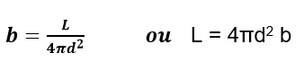
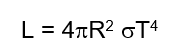

LUMINOSIDADE
A luminosidade é uma medida da quantidade total de energia
emitida por uma estrela por unidade de tempo e é um indicador
direto do seu brilho. A Luminosidade (L) de uma estrela
é uma medida da quantidade de energia emitida por esta em
cada unidade de tempo. Esta energia é emitida para o espaço
em todas as direções. Assim, a uma determinada distância da
estrela, a energia que atravessa a unidade de área em cada
unidade de tempo é dada por b=L/(4πd^2 ) , esta quantidade
designamos por brilho aparente (b) da estrela

A luminosidade L de uma estrela pode ser expressa em função
de seu tamanho e de sua temperatura superficial:

Onde R é o raio da estrela (aproximando-a como uma esfera), T a temperatura nas suas camadas externas (chamada de fotosfera) e é uma constante chamada de constante de Stefan-Boltzmann.
No diagrama, as estrelas mais luminosas são posicionadas na parte superior, enquanto as menos luminosas estão na parte inferior. Este eixo é logarítmico, o que significa que cada marcação no eixo representa um aumento exponencial na luminosidade, permitindo que estrelas de luminosidades muito diferentes sejam representadas no mesmo gráfico (Russell, 2019).